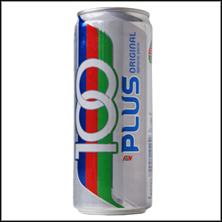
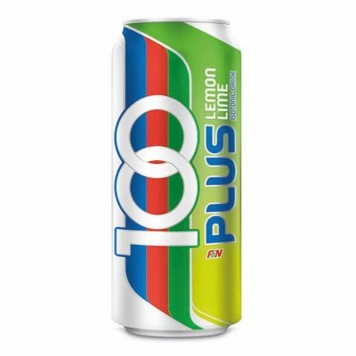
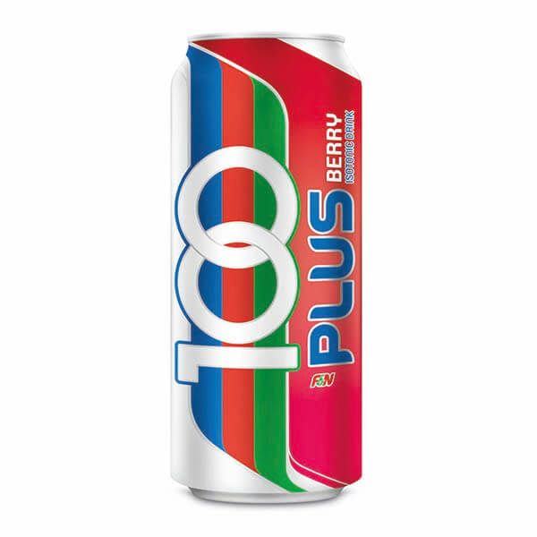
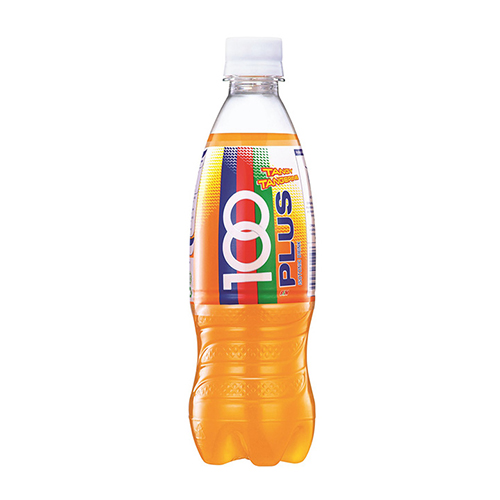
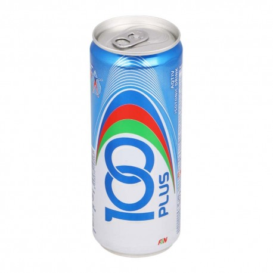

100PLUS was launched in Malaysia in 1983. Ahead of its time with its Sports & Active Lifestyle positioning then, success did not come easily for the new brand. However, the management of the company behind the brand believed in the potential of the product and persevered. The company worked tirelessly and continued to invest resources, time and effort to build the brand and to promote 100PLUS to the sporting community who were then unfamiliar with the merits of isotonic beverages. The company's foresight, vision and tenacity eventually paid off. As people started becoming more health-conscious, a distinct accompanying shift in consumer preference towards healthier alternative drinks took place. This and the increasing adoption of a more active lifestyle, made consumers start choosing 100PLUS over others. 100PLUS is the first isotonic beverage to be launched in Malaysia. It is thirst-quenching and caffeine-free, specially formulated to help restore what the body has lost during physical exertion and rehydrate the body to its optimal hydration balance. Its unique formula combines fluids, carbohydrates and electrolytes for quick and efficient absorption of fluids into the body. 100PLUS is one of the leading brands under the F&N flagship in Malaysia. It is produced and distributed by F&N Beverages Marketing Sdn Bhd, the largest soft drinks distributor and manufacturer in Malaysia.
|  |
OriginalPeak performance is driven by two things – passion and a healthy body. Loaded with glucose and minerals, 100PLUS keeps your body properly hydrated for optimum bodily function and speedy recovery. With that extra advantage, your body is even better equipped to keep up with your thirst for success. |
|  |
LimeThe zesty sourness wakes you up, making you feel alive and ready for the next challenge. Infused with the power-packed benefits of trace minerals and glucose, 100PLUS Lemon Lime is a great way to rehydrate, refresh, and re-energise. So get out there – it’s time to pave a way to your dreams! |
|  |
Berry00PLUS Berry doesn’t just leave a sweet taste in your mouth; it gives you a boost to beat any obstacles that come your way. The isotonic solution contains glucose and minerals to hydrate as well as increase your level of endurance. |
|  |
OrangeStaying hydrated and active all day is not easy, but 100PLUS Orange helps you do just that. The juicy orange flavour spikes up your spirit with an isotonic glucose-and-mineral solution for better hydration balance. Now, the only thirst you have is your thirst for a challenge. |
|  |
AqtivEvery day, you lose about six to thirteen cups of water to the simplest things – humidity, daily activities, even air-conditioning. 100PLUS Aqtiv not only rehydrates, but also contains essential minerals that help retain fluids. With fatigue and dehydration out of the way, there’s no telling what you can achieve every day. |